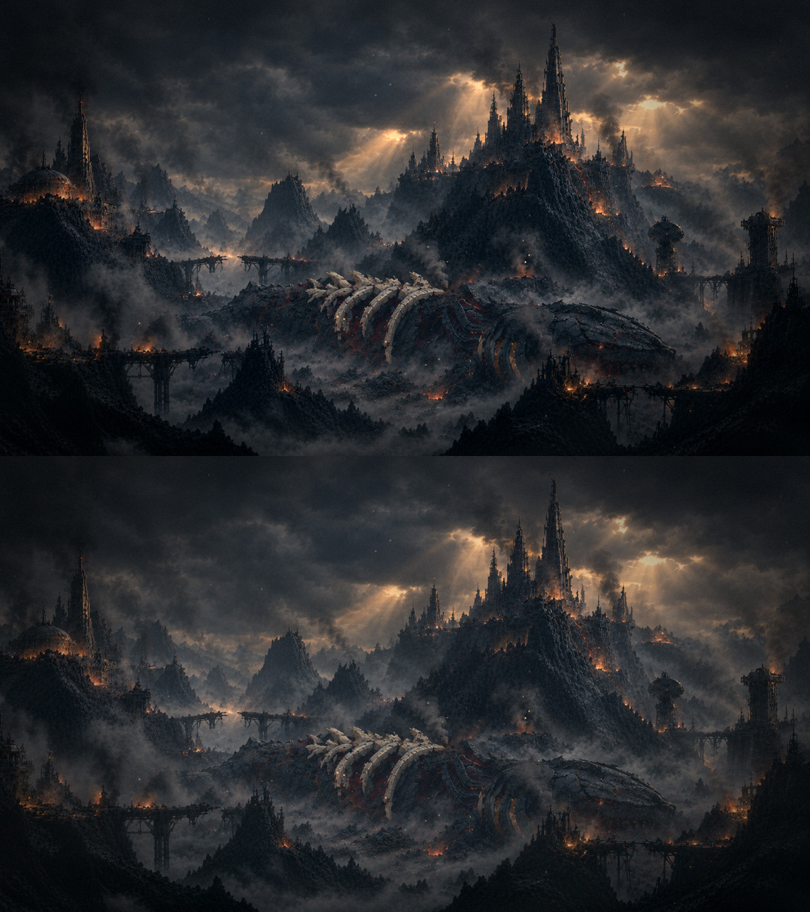

O amanhecer vivo: o véu de fumaça e neblina
13/11 · bloco I, etapa 3, parte B · a rodada 2 em vida2.html.
O seu último ajuste: "uma tela ou um efeito de fumaça e neblina em todo o cenário, para mostrar que as fumaças e a neblina do amanhecer tornaram o cenário num campo de batalha devastador".
São quatro lençóis largos que cobrem a tela inteira e passam na frente de tudo, inclusive das silhuetas do primeiro plano: dois de fumaça escura e quente, que tiram o contraste, e dois de neblina clara. Cada um anda na sua velocidade e engrossa e afina devagar (um ciclo leva de 19 a 31 s), sem nunca sumir. Só a cinza passa na frente dele.
Tudo junto, com o véu
Sem o véu (em cima) e com o véu (embaixo)

O véu sozinho sobre a pintura
O que eu preciso de você
- A densidade: é esse o campo de batalha que você imaginou, ou quer o véu mais pesado ou mais leve?
- A carcaça: ela continua legível o bastante por trás do véu?
Para ver no jogo: http://localhost:5173/?menu=amanhecer (tudo ligado, com o véu);
&vida=veu mostra só o véu, e
&vida=bruma,raios,fumaca,fogo,brasas,lava,cinza mostra tudo sem ele.